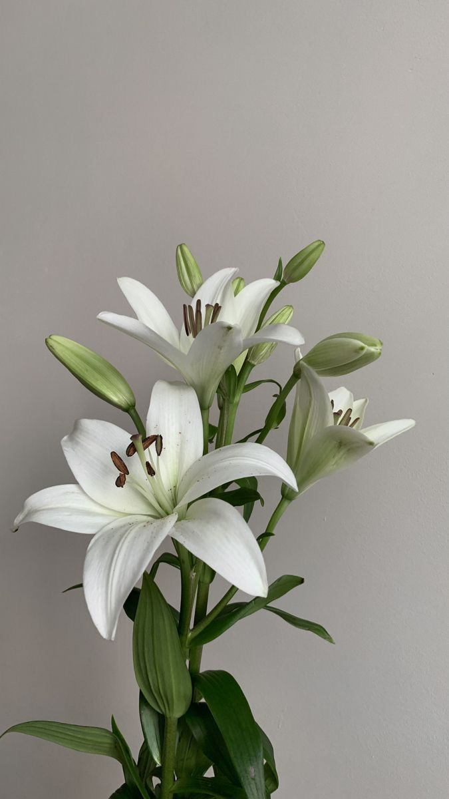

Crinii (Lilium) sunt plante perene cunoscute pentru florile lor mari, elegante și parfumate. Originari din regiunile temperate ale emisferei nordice, crinii au flori în diverse culori, inclusiv alb, roz, roșu, portocaliu și galben. Plantele preferă soluri bine drenate și locuri însorite sau parțial umbrite. Crinii cresc din bulbi, care se plantează toamna sau primăvara. Aceste flori sunt populare în grădini și aranjamente florale, simbolizând puritatea, noblețea și renașterea.
